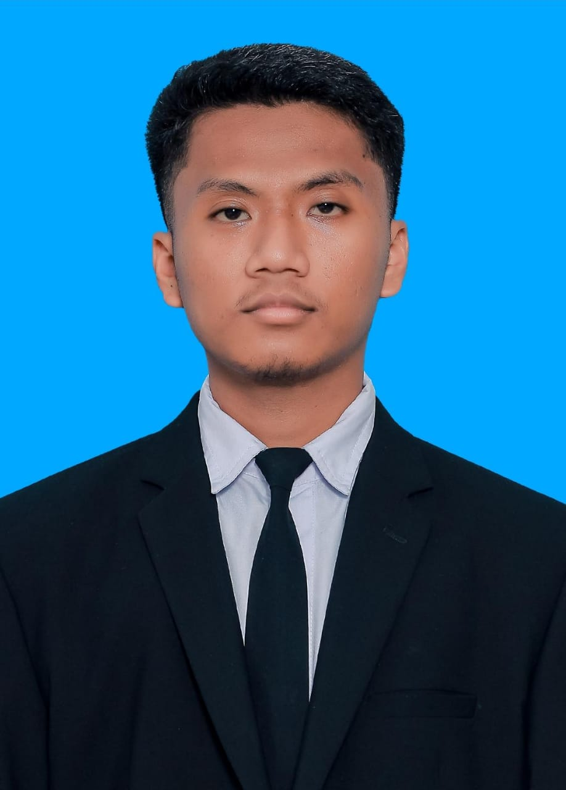

Tentang Saya
Halo, nama saya Moh Maulana Yahya. Saya lahir di Palu pada 11 Januari 2005, dan saat ini saya adalah mahasiswa di Universitas Tadulako, Fakultas Teknik, Program Studi Teknik Informatika. Saya memiliki hobi bermain game dan ketertarikan besar dalam ilmu komputer.
Portofolio
Saya minta maaf sebelumnya karena hanya menampilkan foto saya, sebab saya belum memiliki proyek atau karya milik saya sendiri. Saya mungkin telah melalui seluruh ujian dalam 2 semester akhir ini tapi itu belum cukup untuk mengasah saya hingga dapat membuat sebuah karya, saya masih ingin belajar lagi jadi mohon perhatian anda.